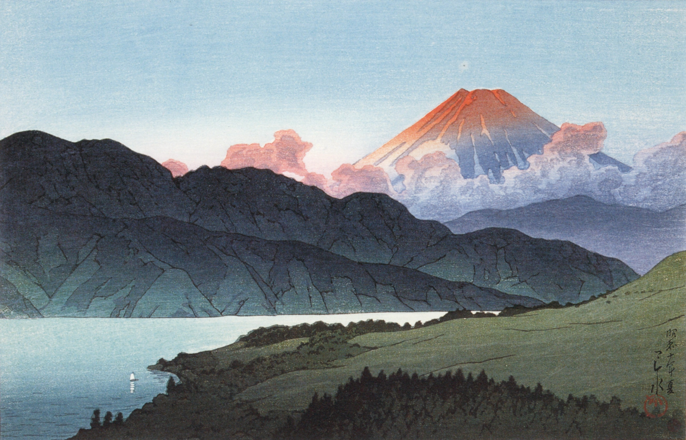
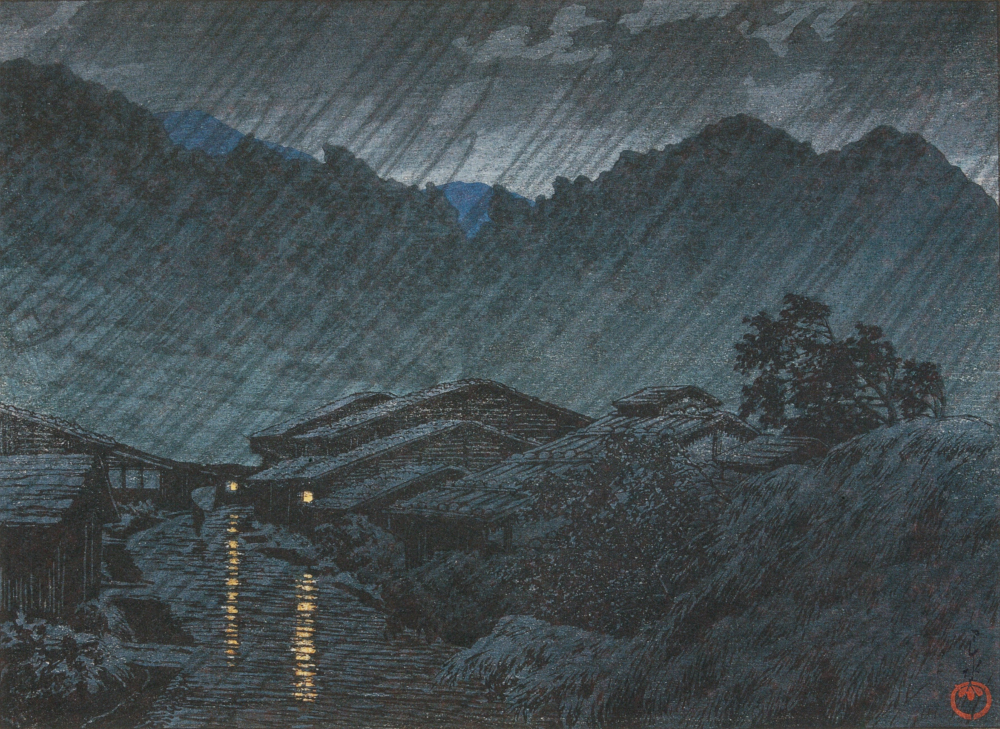
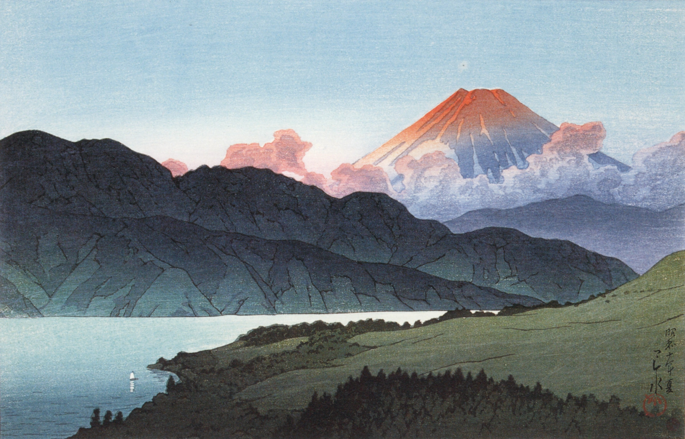
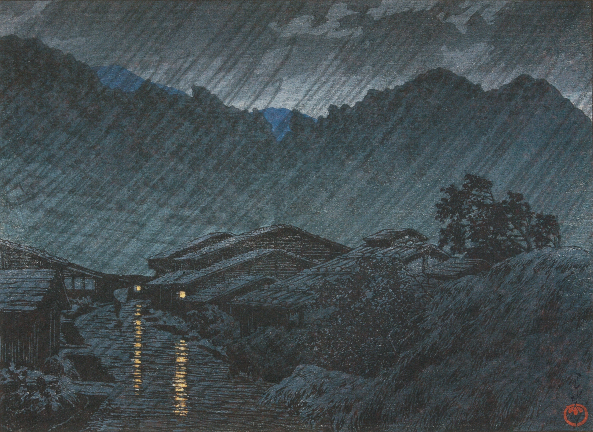
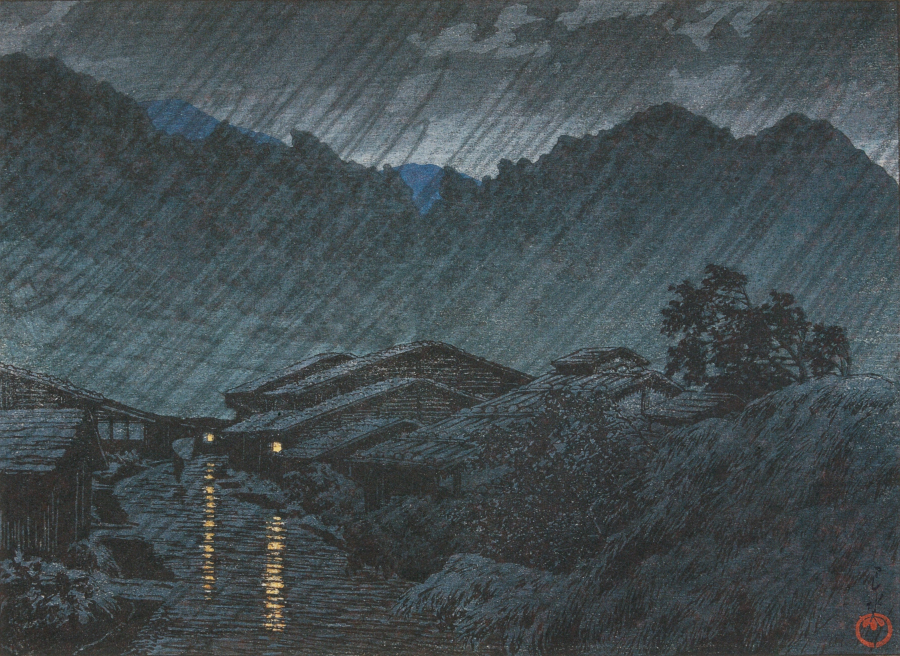
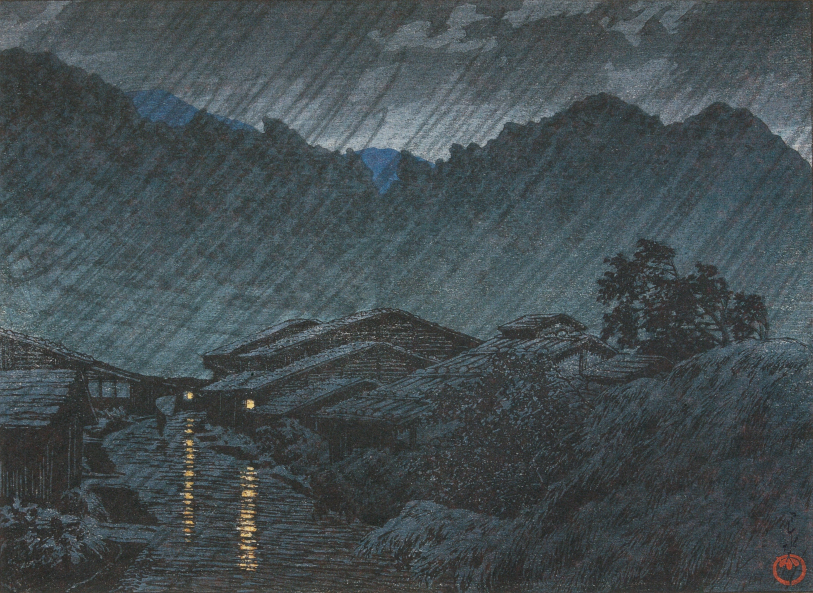

![]() 
![]() 
種田山頭火Taneda Santōka1882–1940
My back view as I go, / Wetted with the winter rain?Ushiro-sugata no shigurete yuku ka
Up to the very end, it is journeying, / And cutting our (toe-) nails.Itsumademo tabi wo suru koto no tsume wo kiru
My native place / Far away: / The buds on the trees.Furusato wa tokushite ki no me
Into the iron bowl also, / Hailstones.Tetsubachi no naka e mo arare
Plop on my kasa / The flower of the camellia!Kasa e pottori tsubaki datta
I have gratefully received it; / It was enough; / I lay down my chopsticks.Itadaite tarife hitori no hashi wo oku
The road became quiet and solitary; / Dokudami is budding.Shizukana michi to nari dokudami no me
A crow is cawing; / I also am by myself.Karasu naite watashi mo hitori
Going further into them, / And further into them, / Still more green mountains.Wake-itte mo wake-itte mo aoi yama
This is the stone, / Drenched with rain, / That marks the way.Shitodo ni nurete kore wa michishirube no ishi
Rained upon / For all our sakes, / Hotoke Sama.Hito no tame ni shigurete hotoke sama
Leaves of the trees fall; / Walking on and on.Ko-no-ha chiru aruki-tsumeru
The snow of life and death / Falls incessantly.Sei-shi no naka no yuki furi-shikiru
Walking through / The bush clover, the pampas grass, / Walking on through them.Fumi-wakeru hagi yo susuki yo
Buoyantly we go / Like the wind, / Tasting water.Hyo-hyo to shite mizu wo ajiwau
I am bitten by mosquitoes, / Quite alone.Hitori de ka ni kuwarete iru
I walk along, / Letting the dragon-fly / Perch on my kasa.Kasa ni tombo wo tomarasete aruku
Cold winter rain; / I am still alive.Shigururu ya shinanaide iru
I am walking; / It cannot be otherwise.Do shiyo mo nai watashi ga aruite oru
Crossing over / A dried up river.Kare-kitta kawa wo wataru
Quite withered up, / It is just beans.Sukkari karete mame to natte iru
I can't throw it away, / But how heavy my pack, / Before and behind!Sutekirenai nimotsu no omosa mae ushiro
I am wet / By the rain / From that cloud.Ano kumo ga otoshita ame ni nurete iru
The grasses / That have become autumn,— / Sitting down in them.Aki to natta zasso ni suwaru
Seeds of grasses; / My monkish robe / Is so worn!Hoi konna ni yaburete kusa no mi
As I grow old, / I yearn for my native place: / Tsukutsukuboshi!Toshi toreba kokyo koishii tsukutsuku-boshi
Together with the sound of the water, / I came down to my native village.Mizuoto to issho ni sato e orite kita
Intently / I eat my meal / Of boiled rice only.Shimi-jimi taberu meshi bakari no meshi de aru
Not a single cloud in the sky; / I take off my kasa.Mattaku kumo ga nai kasa wo nugi
The sound of the rain-drops also / Has grown older.Amadare no oto mo toshi-totta
No house more to beg from; / Clouds over the mountains.Mono kou ie mo naku nari yama ni wa kumo
Has my kasa too / Begun to leak?Kasa mo moridashita ka
The grasses I tread, / Uncertain and fickle, / Are all withered away.Ate mo naku fumiaruku kusa mina karetari
In the warm sunlight / At the foot of the hill, standing side by side, / A few graves.Yama-suso atataka na hi ni narabu haka sukoshi kana
I was silent all day: / Facing the sea, / The tide came up.Ichi-nichi mono iwazu umi ni mukaeba shio michite kinu
A soft whirling drunk
a scattering of leaves.Horohoro yoppaute
ki no ha chiru.
further in yet / further in yet / green hills
taking a leisurely pee / in lush sprouting grass
tree leaves fall / walking on and on
on a rock the dragonfly / looks at midday dreams
In pine winds at dawn and dusk striking the bellMatsukaze ni akekure no kane tsuite
I go in I go in still the blue mountainsWakeitte mo wakeitte mo aoi yama
In the midst of life and death the snow falls ceaselesslySeishi no naka no yuki furishikiru
Burning heaven on my head I beg I walkEnten o itadaite koi aruku
Alone being eaten up by mosquitoesHitori de ka ni kuwareteiru
Letting the dragonfly stay on my hat I walk onKasa ni tombo o tomarasete aruku
The road being straight lonesomeMassuguna michi de samishii
Wordlessly I put on today's straw sandalsDamatte kyo no zori haku
Fluttering drunk leaves scatterHorohoro youte ki no ha chiru
Winter shower I'm still not deadShigururu ya shinanaideiru
The shadow in the water I am a travelerMizu ni kage aru tabibito de aru
The snow falls falls as I watch the snowYuki ga furu furu yuki miteoreba
I've received enough to eat the rain startsTaberu dake wa itadaita ame to nari
It having survived I'm scratching my bodyIkinokotta karada o kaiteiru
The mountain I'll never see again grows distantMata miru koto mo nai yama ga touzakaru
A shrike calls there's no place to dump my bodyMozu naite mi no sute dokoro nashi
Hopeless I keep walkingDou shiyou mo nai watashi ga aruiteiru
The Daikan Peak
I go in and the sound of waterWakeireba mizu no oto
I slip and fall the mountain hushedSubette koronde yama ga hissori
Maimai's Residence
Ceaselessly dropping these large leavesShikirini ochiru ookii ha kana
Completely withered they are now beansSukkari karete mame to natteiru
On my tired leg a dragonfly has lightedTsukareta ashi e tombo tomatta
A withered mountain with enough water to drinkKareyama nomu hodo no mizu wa arite
My monk's robe so torn grass seedsHoui konnani yaburete kusa no mi
That cloud dropped the rain I'm getting wet inAno kumo ga otoshita ame ni nureteiru
Autumn's come I sit in the weedsAki to natta zassou ni suwaru
Such delicious water overflowingKonnani umai mizu ga afureteiru
With the sound of water I've come down to a villageMizuoto to issho ni sato e oritekita
Absolutely no cloud I take off my hatMattaku kumo ga nai kasa o nugi
Up to the graves in rows the waves rolling inHaka ga narande soko made nami ga oshiyosete
Drunk I'd been asleep with the cricketsYoute kourogi to neteita
The sound of the rain dripping has also grown oldAmadare no oto mo toshitotta
Holding out its branches a winter treeEda o sashinobeteiru fuyuki
No more houses to beg at above the mountain cloudsMono kou ie mo nakunari yama ni wa kumo
Or I stop begging and am looking at the mountain6Aruiwa kou koto o yamete yama o miteiru
Even my hat has started to leak I seeKasa mo moridashita ka
This frosty night's bed must be somewhereShimoyo no nedoko ga dokoka ni aro
Your back in the winter shower you go away I seeUshiro sugata no shigurete yukuka
Into my iron alms bowl too hailTeppatsu no naka e mo arare
This the tooth that came out just like thatHorori to nuketa ha de wa aru
Cold clouds hurrySamui kumo ga isogu
My hometown's distant tree budsFurusato wa toukushite ki no me
Thump on my hat was a camelliaKasa e pottori tsubaki datta
In autumn wind I pick up a stoneAkikaze no ishi o hirou
Along today's road dandelions have bloomedKyou no michi no tampopo saita
Rain falls in my hometown walk barefootAme furu furusato wa hadashi de aruku
To the kitchen moonlight aloneKuriya made tsukikage no hitori de
Morning glow rain falls I'll sow daikonAsayake ame furu daikon makou
Dew in grass seeds, trying to calm downKusa no mi no tsuyu no, ochitsukou to suru
From the evening sky I accept one citronYuuzora kara yuzu no hitotsu o morau
The moon risen I'm waiting for nothing in particularTsuki ga nobotte nani o matsu de mo naku
With this and that to eat one windy dayArekore taberu mono wa atte kaze no ichinichi
The sound of water truly I've calmed downMizuoto shinjitsu ochitsukimashita
The sense that someone's coming the sky cloudy loquat blossomsDare ka kisou na sora ga kumotteiru biwa no hana
In the snowy sky I pick the last oneYukizora no saigo no hitotsu o mogu
Gochu snow falls as a solitary man I make a fireGochu yuki furu hitori to shite hi o taku
A warm day, still have things to eatNukui hi no, mada taberu mono wa aru
Through the moonlight's center I come backTsukikage no mannaka o modoru
I'm in the quietness of snow falling on snowYuki e yuki furu shizukesa ni oru
Snow falls one by one they goYuki furu hitori hitori yuku
Moonlit night, so your gift was riceTsukiyo, temiyage wa kome dattaka
Camellias open there's a graveTsubaki hiraite haka ga aru
The noise a bird that's come to eat nuts in the morning perhapsOto wa asa kara ki no mi o tabeni kita tori ka
I pull and pull yet I pull the grass's attachmentNuite mo nuite mo kusa no shuuchaku o nuku
Today I pick bog rhubarb I eat bog rhubarbKyou wa fuki o tsumi fuki o tabe
Sparrows dance yeah dandelions scatter yeahSuzume odoru ya tampopo chiru ya
A butterfly from back to front flutteringTefu tefu ura kara omote e hira hira
Today also all day no one came firefliesKyou mo ichinichi dare mo konakatta hotaru
Dragonfly trying to light on my stark naked body are youSuppadaka e tombo tomarou to suruka
Rustling stirring a non-chirping insect has comeKasari kosori oto sasete nakanu mushi ga kita
Pine winds cool a man eats a horse eatsMatsukaze suzushiku hito mo tabe uma mo tabe
Which is what everything's abloomNani ga nani yara minna saiteiru
I walk and buttercups I sit and buttercupsArukeba kimpouge suwareba kimpouge
With the drips from the young leaves the drips from my hatWakaba no shizuku de kasa no shizuku de
The temple's bamboo shoots have become bambooO-tera no takenoko take ni natta
Alone I listen a woodpeckerHitori kiiteiru kitsutsuki
I'm waiting the cherries are ripeningMatteiru sakurambo ureteiru
In the mountain's embrace I become nakedYama futokoro no hadaka to nari
On the mountain all day ants too are walkingYama no ichinichi ari mo aruiteiru
Clouds hurry and turn it into a good moonKumo ga isoide yoi tsuki ni suru
Always alone and red dragonfliesItsumo hitori de akatombo
It moved was a bagwormUgoite minomushi datta yo
Grass grows thick that's a place for burning the deadKusa shigeru soko wa shinin o yaku tokoro
Morning dew sopping I go where I wantAsatsuyu shittori ikitai hou e iku
Burning heaven with no place to hide the water flows toward meEnten kakusu tokoro naku mizu no nagarete kuru
The evening shower has washed the eggplants I pick 'emYuudachi ga aratte itta nasu o mogu
Crickets there's just enough rice for tomorrowKourogi yo asu no kome dake wa aru
I reach figs their ripenessTe ga todoku ichijiku no urezama
Memories the tides rise at the hometown ferryOmoide wa shio michitekuru furusato no watashiba
I see the sun off beyond the mountains and eat my mealYama no anata e o-hi-sama o miokuri gohan ni suru
Noon too quiet flies know the fly-swatterHiru mo shizukana hae ga haetataki o shitteiru
The misery of no longer being able to get drunk the crickets chirpYoenakunatta mijimesa wa korogi ga naku
Was so good the evening shower the sounds of water here and thereHonni yokatta yuudachi no mizuoto ga soko koko
Finally the mail came and now only ripe persimmons dropYatto yuubin ga kite sorekara jukushi no ochiru dake
Each time a fruit ripens and drops I pick it upUrete wa ochiru mi o hirou
After seeing someone off I return alone through the quagmireHito o miokuri hitori de kaeru nukarumi
Moonlit night, I wash all the rice I haveTsukiyo, aru dake no kome o togu
The sky's depth dead leaves sunk in the waterSora no fukasa wa ochiba shizundeiru mizu
With the moonlight from behind me I cross the waterUshiro kara tsuki no kage suru mizu o wataru
Broken with a snap bamboo among bambooPokiri to orete take ga take no naka
The moon goes behind it and there's the thicket's shadowTsuki ga ura e mawareba yabukage
This year too this its last night sleet startsKotoshi mo kon'ya giri no mizore to natta
Here like this I place myself winter nightKoko ni koushite watashi oiteiru fuyuyo
I get sick and a blue heron comes nearYameba aosagi ga sokora made
I'm eating sake the mountain's witheredSake o tabeteiru yama wa kareteiru
The brightness of snow everywhere the quietnessYuki no akarusa ga ie ippai no shizukesa
Camellias fall the water flowsTsubaki no ochiru mizu no nagareru
I wake snow falls, not that I'm lonelyNezame yuki furu, sabishigaru dewa nai ga
The owl in the owl's way I in my way can't sleepFukurou wa fukurou de watashi wa watashi de nemurenai
The moon goes behind it still the tree shadowTsuki ga ura e mawattemo kokage
The bagworm too dripping spring has come yesMinomushi mo shizuku suru haru ga kita zo na
Grasses and trees alive I'm back they luxuriateKusa ya ki ya ikite modotte shigetteiru
Ill alone a morning turns into evening green leavesYamite hitori no asa ga yuube to nariyuku aoba
The persimmon's young leaves glitter in the sky I'm yet not deadKaki no wakaba no kagayaku sora o shinazuni iru
Bees butterflies grasses so many bloomingHachi ga tefucho ga kusa ga nambo demo saite
Always chained the dog has no choice but to barkItsumo tsunagarete hoeru hoka nai inu desu
Sprouting growing blooming happinessHaete nobite saiteiru koufuku
Their shadows distinct the young leavesKage mo hakkiri to wakaba
Suddenly out of a hole a lizard is itHyoito ana kara tokage ka yo
Peckers and pussies overflowing hot waterChimpoko mo ososo mo waite afureru yu
Alone hushed a bamboo shoot grows to become bambooHitori hissori takenoko take ni naru
A mountain peers from behind a mountain the rainy season's overYama kara yama ga nozoite tsuyubare
With something to eat something to drink in the weeds rainTaberu mono wa atte you mono mo atte zassou no ame
Under burning heaven an endless line of antsEnten no hate mo naku ari no gyouretsu
The spider spreads his net I affirm myselfKumo wa ami haru watashi wa watashi o kouteisuru
Ready to die any moment grass blooms bears seedsItsu de mo shineru kusa ga saitari minottari
The sun at its most intense one leaf fallsHizakari ochiru ha no ichimai
A cool wind passes so do bees so do dragonfliesKaze ga suzushiku fukinukeru node hachi mo tombo mo
Drink hometown's water bathe in the waterFurusato no mizu o nomi mizu o abi
Make this the place to die grasses luxuriate luxuriateKoko o shini basho to shite kusa no shigeri ni shigeri
In an autumn wind, an angry praying mantis thisAkikaze no, haratateteiru kamakiri de
Burdened with a heavy load he's blindOmoni o oute mekura de aru
The road where we parted straightWakaretekita michi ga massugu
Wake from a nap whichever way I look mountainsHirune samete dochira o mite mo yama
A good inn mountains everywhere and a sake store in frontYoi yado de dochira mo yama de mae wa sakaya de
I sit and there's a wind autumn weedsSuwareba kaze ga aru aki no zassou
I decide to sleep here grass seeds spillKoko de neru to suru kusa no mi no koboreru
Bush clover and pampas grass are today's roadHagi ga susuki ga kyou no michi
Leaves fall fall into my alms bowl tooKi no ha furu furu hachinoko e mo
I walk and grass seeds I sit and grass seedsArukeba kusa no mi suwareba kusa no mi
Now, which way shall I go the wind blowsSate, dochira e iko kaze ga fuku
There's only this road spring snow fallsKono michi shika nai haru no yuki furu
Because the mountain's quiet I take off my hatYama shizuka nareba kasa o nugu
The two or three left become ripe persimmons clouds come and goNokosareta futatsu mittsu ga jukushi to naru kumo no yukiki
No one comes cayenne peppers turn redDare mo konai tougarashi akou naru
I take ill and the pickled plums' redYameba umeboshi no akasa
No matter how I think it's all the same I step on dead leaves and walk onNambo kangaete mo onnaji koto no ochiba fumi aruku
I lie down I get up leaves fallNetari okitari ochiba suru
Wide awake and feeling the moon right aboveHokkari samete maue no tsuki o kanjiteiru
Withering grass I sit on its beautyKareyuku kusa no utsukushisa ni suwaru
I live withdrawn and a wrenHissori kuraseba misosazai
Dangling the snow falling on a bagwormBurari to sagatte yuki furu minomushi
Just as they are weeds sproutAru ga mama zassou to shite me o fuku
From the mountain white flowers to my deskYama kara shiroi hana o tsukue ni
Into the sky young bamboo with no troubling thoughtsSora e wakatake no nayami mo nashi
Around me all grasses every one bloomingMi no mawari kusa darake minna saiteru
I roll on my back and there's the blue skyKorori nekorobeba aozora
Seeking what I go through the windNani o motomeru kaze no naka yuku
In the depths of the green leaves the path still then a graveAoba no oku e nao michi ga atte haka
The moon before you know it brightens and katydidsTsuki ga itsushika akarukunareba kirigirisu
Butterflies entangling in the shadow in the sunTefutefu motsuretsutsu kagehinata
Once you die, weeds rain fallsShindeshimaeba, zassou ame furu
Before death a cool breezeShi o mae ni suzushii kaze
Even while wind chimes tinkle death sneaks upFuurin no naru sae shi no shinobiyoru
Have no thoughts to leave the evening's sweet potato leaves aflutterOmoi oku koto wa nai yuube no imo no ha hirahira
The wound healing turning autumnal the wind blowsKizu ga ieyuku aki meita kaze to natte kaze fuku
I walk and cuckoos I hurry and cuckoosArukeba kakkou isogeba kakkuu
Heart empty the rough waves rolling in rolling outKokoro munashiku aranami no yosete wa kaeshi
Crouched on a dune today I still can't see SadoSakyuu ni uzukumari kyou mo Sado wa mienai
Legs stretched toward the rough sea before and after the journeyAraumi e ashi nagedashite tabi no atosaki
Having come this far I drink water and leaveKoko made o koshi mizu nonde saru
A butterfly aflutter has gone over the roof tilesTefutefu hirahira iraka o koeta
Sobering a wind sadly blows through meYoizame no kaze no kanashiku fukinukeru
My heart calms down and the sound of the waterKokoro ochitsukeba mizu no oto
I follow the bright and dark sides of a windKaze no meian o tadoru
From the moon flutters down a persimmon leafTsuki kara hirari to kaki no ha
Waiting for what day by day dead leaves grow deepNani o matsu hi ni hi ni ochiba fukounaru
Drying up the water's clarityKaretekuru mizu no sumi yo
Wash 'em and daikon grow even more whiteAraeba daikon iyoiyo shiroshi
With a shadow too desultorily late night I'm eatingKage mo bosoboso yofuke no watashi ga tabeteiru
I know the footfalls stepping on the fallen leaves coming closerOchiba fumikuru sono ashioto wa shitteiru
After all being alone's lonesome the withered grassYappari hitori wa samishii karekusa
Leaves fallen all the more intimate my neighbor's lightOchiba shite sarani shitashiku otonari no hi no
Out of the wind caw caw crowsKaze no naka kara kaakaa karasu
The leaves fallen no more leaves to fall the sunHa no ochite ochiru ha wa nai taiyou
Snow falls I have things to eat snow fallsYuki furu taberu mono wa atte yuki furu
Moon's brightness I wonder where they're bombingTsuki no akarusa wa doko o bakugeki shiteiru koto ka
Snow falling on snow battle is about to begin they sayYuki e yuki furu tatakai wa kore kara da to iu
The town's festive you've returned as bones have youMachi wa omatsuri o-hone to natte kaeraretaka
Horse too requisitioned grandpa grandmaUma mo mesarete ojiisan obasan
Legs and arms left in China you are back to JapanAshi wa te wa Shina ni nokoshite futatabi Nihon ni
Wordlessly playing a single bird in the blossomsDamatte asubu tori no ichiwa ga hana no naka
The spring wind's bagworm has taken a sudden peekHarukaze no minomushi hyoito nozoita
Taking a sudden peek the bagworm doesn't cryHyoito nozoite minomushi wa nakanai
The green of the grass I return barefootKusa no aosa yo hadashi de modoru
In rows bamboo shoots turning into bambooNarande takenoko take ni naritsutsu
In the wind I walk blaming myselfKaze no naka onore o semetsutsu aruku
Winter shower all the rice I got cooked goodShigururu ya aru dake no gohan yo taketa
Death held tight the cayenne pepper scarletShi o hishi to tougarashi makka na
Death's stillness is the clear sky a leafless treeShi no shizukesa wa harete ha no nai ki
There in front of death I put the moonSoko ni tsuki o shi no mae ni oku
I open the window the spring filling the windowMado akete mado ippai no haru
Stillness, bamboo shoots have all turned into bambooShizukesa, takenoko minna take ni natta
Living alone and green green is the grassHitori sumeba aoao to shite kusa
A hop a single red frogTonde ippiki akagaeru
Near my body water comes flowingMi no chikaku mizu no nagarete kuru
From somewhere clouds appear autumn cloudsDoko kara tomo naku kumo ga detekite aki no kumo
Autumn wind, whichever way I want to go as far as I can goAkikaze, ikitai hou e ikeru tokoro made
Since I stopped coming across people the mountain butterfliesHito ni awanakunarite yori yama no tefutefu
With this body that can die any place spring windDoko demo shineru karada de shumpuu
Balmy the butterfly is deadUraura chou wa shindeiru
Cherry blossoms at their peak a prisonSakura mankai ni shite keimusho
Of the house where I was born no trace left firefliesUmareta ie wa atokata mo nai hotaru
Water's delicious frog croakMizu no umasa o kawazu naku
Letting the moon as far as my bed I decide to sleepNedoko made tsuki o ire neru koto ni suru
The darkness of the rice trusty I wash itKome no kurosa mo tanomoshiku arau
My bellybutton a pool of sweatHeso ga ase tameteiru
Walls crumbling from there vine grassKabe ga kuzurete soko kara tsurugusa
That's a pre-death butterfly danceSore wa shi no mae no tefutefu no mai
Autumn's end-turned-fly crawls aboutAki mo owari no hae to nari haiaruku
Moon invisible moonlit water brimmingTsuki wa mienai tsukiakari no mizu manman
Cawing a crow, flapping a crow, with no place to settle downNaite karasu no, tonde karasu no, ochitsuku tokoro ga nai
The sound of water today too alone I travelMizuoto kyou mo hitori tabi yuku
Mountain's quietness the white flowerYama no shizukesa wa shiroi hana
Can't calm down the futon heavy I sleepOchitsukenai futon omotaku neru
Under burning heaven the railway track straightEnten no reeru massugu
A crow flies away I'll cross the waterKarasu tondeyuku mizu o wataro
where the walls are
vines the grassfalling apart the
and the shadows toomen women
dancing
the waves sound sometimes
close and sometimes far away
how much more of life
Pine trees
With branches all drooping—Namu-kanzeon sutra.Matsu wa mina / eda tarete / namu-kanzeon
Ringing the temple-bell
To the sound of pine trees;
Mornings and evenings.Matsukaze ni / ake kure no / kane tsuite
Sweeping the yard for a change,
Flowers in the hedge are in bloom.Hisashiburini haku / kakine no hana ga saita
Getting further and further
Into the mountains,
But still deep blue mountains.Wakeittemo / wakeittemo / aoi yama
Soaked and Soggy to the core,
It's a milestone.Shitodo ni nurete / korewa michishirube no ishi
Under the canopy of scorching heaven
I walk and beg.Enten wo itadaite / koi aruku
Lone crow is cawing;
I'm alone too.Karasu naite / watashi mo hitori
In the midst of life and death
Snow's falling thick and fast.Shoji no naka no / yuki furishikiru
Leaves are falling;
I walk and walk.Konoha chiru / aruki tsumeru
All alone,
Letting mosquitoes bite my flesh.Hitoride / ka ni kuwareteiru
Stretching my legs
To the light of a westering sun.Nagedashite / mada hi no aru ashi
Walking with a dragonfly
Resting on my sedge-hat.Kasa ni tombo wo / tomarasete / aruku
It's a straight road
That makes me feel lonely.
It's a lonely road that has no turning.
In silence
I put on straw sandals for today.Damatte / kyo no waraji haku
Late autumn rain's falling;
I have yet to die.Shigururu ya / shinanai de iru
My shadow on the water,
Traveler I am.Mizu ni kage aru / tabibito de aru
Late autumn rain's falling
Into the mountain,
Towards which I go on walking.Shigururu ya / shigururu yama e / ayumi iru
Buds of trees,
Buds of grasses,
I keep on walking.Kinome / kusanome / aruki tsuzukeru
I've survived—Scratching my body.Iki nokotta karada / kaite iru
Mountains I've left for good
Are going out of sight.Mata miru koto mo nai yama ga / toozakaru
Crickets are chirping,
Chirping to me all the time.Koorogi ni / nakarete bakari
Shrike is chirping;
No place to throw away myself.Mozu maite / mi no sutedokoro nashi
Slipped, tumbled,
Mountain is quiet and alone.Subette koronde / yama ga hissori
My tired legs—Dragonfly landed on one.Tsukareta ashi e / tombo tomatta
Monk-robe
Threadbare so—Grass seeds.Houe / konnani yaburete / kusa no mi
Behind the rocks,
Sure enough, a fountain;
Eureka!Yuwa kage / masashiku / mizu ga waite iru
Those clouds threw a rain shower;
I'm wet through.Ano kumo ga / otoshita ane ni / nurete iru
Autumn is come;
Sitting on the weeds.Aki to natta / zasso ni suwaru
Water so tasty,
Flowing all over.Konnani umai mizu ga / afurete iru
Have come down to the village
With the sound of water.Mizuoto to isshoni / sato e orite kita
No clouds whatsoe'er,
I took off my sedge-hat.Mattaku kumo ga nai / kasa wo nugi
Drunk,
Found myself sleeping with crickets.Youte / koorogi to / nete itayo
Sound of raindrops,
You're getting old, too.Amadare no oto mo / toshi totta
No more doors to beg,
Clouds o'er the mountains.Mono gou ie mo nakunari / yama niwa kumo
—Reminiscence—My sedge-hat
Getting leaky at last.Kasa mo / moridashita ka
—Self-ridicule—I'm leaving
With my backside wet
In late autumn rain.Ushiro sugata no / shigurete yuku ka
Into begging bowl of iron
Down came the hailstones.Teppachu no naka e mo arare
My native town
Far, far away—Burgeoning trees.Furusato wa / tooku shite / ki no me
Getting out of a nice bath
Into lovely moonlight.Yoi yu kara / yoi tsuki e deta
Among budding trees
Birds are now singing.Haya mebuku ki de / naite iru
Something fell on my sedge-hat—Camellia.Kasa e pottori / tsubaki datta
Eating fully enough with thanks,
I put down chopsticks;
All alone.Itadaite / tarite hitori no / hashi wo oku
In autumn wind
I pick up a pebble.Akikaze no / ishi wo hirou
Alongside today's road
Dandelions in bloom.Kyo nomichi no / tampopo saita
It's raining in my hometown;
I'm walking barefoot.Ame furu furusato wa / hadashi de aruku
Having moved in and settled down,
I'm surrounded by flowers of the opposite shore/
flowers of the autumnal equinox.*Utsuri kite / o-higanbana no / hana zakari
Glory of the morning sky
Heralds the coming of rain;
Must sow the seeds of radish.Asayake / ame furu / daikon makou
Out of the evening sky
I pick and pluck a yuzu-citrus.*Yuuzora kara / yuzu no hitotsu wo morau
Tea-blossoms keep falling—Let them fall as they do.Cha-no-hana no / chiru bakari / chirashite oku
Winter is come;
Sticks of wood,
Sticks of bamboo.Fuyu ga kiteiru / kigire / takegire
The moon has risen;
I'm awaiting nobody and nothing.Tsuki ga nobotte / nani wo matsu deno naku
There's something to eat,
This and that—Windy all day.Are kore / taberumo wa atte / kaze no ichinichi
Sound of water—I'm truly settled down and relaxed.Mizuoto / shinjitsu / ochitsuki mashita
Falling leaves—Far beyond,
I see Buddha.Ochiba furu oku fukaku / mi-hotoke wo miru
Snow is falling
All around Gochu hermitage;
I build a fire as a lonely self.Gochu yuki furu / hitori to shite / hi wo taku
Warm day,
I have something more to eat.Nukui hi no / mada taberumono wa aru
Snow's falling on snow,
I'm in quietude.Yuki e yuki furu / shizukesa ni oru
Moonlit night,
He came with a handout gift;
I found 'twas rice.tsukiyo / temiyage wa / kome datta-ka
Camellias are in bloom;
There are tombstones.Tsubaki hiraite / haka ga aru
A tiny vase,
A twig of camellia in it.Ichirin-zashi no / tsubaki ichirin
What's that sound—Must be a bird
Eating berries since morning.Oto wa / asa kara kinomi wo tabe ni kita tori ka
Uprooted many a time,
Diehard is the weed;
I pull out its tenacity.Nuitemo / nuitemo / kusa no shuuchaku wo nuku
Today I picked butterburrs,
Ate butterburrs.Kyo wa / fuki wo tsumi / fuki wo tabe
Sparrows dance,
Dandelions fall.Suzume odoru ya / tanpopo chiru ya
Morn is about to dawn,
Windows just opened—Fresh young leaves.Mou ake souna / mado akete / aoba
Long hair...
Gray.Nagai ke ga / shiraga
I'm true and obedient to my mind;
Rice has just been cooked well.kokoro sunaoni / gohan ga fuita
It's good after all
To be all by myself—Weeds.Yappari / hitori ga yoroshii / zasso
Whole day long
No one has come today—Firelies.Kyo mo ichinichi / dare mo konakatta / houtaru
Stark naked I am,
Dragonfly trying to land on me.Suppadaka e / tombo tomarou to suru ka
Making a rustling sound,
Mute insect has come.Kasari kosori / oto sasete / nakanu mushi ga kita
Wind through the pines;
Cool—People eat, horses eat.matsukaze suzushiku / hito mo tabe / uma mo tabe
All day long, today
I have walked in the wind.Kyo mo ichinichi / Kaze wo aruite kita
What's this? What's that?
Everything is blooming.Nani ga nani yara / minna saite iru
When I walk, I see buttercups;
When I sit, I see buttercups.Arukeba kinpohge / suwareba kinpohge
Thistles—Bright in the morning
After the rain.Azami azayakana / asa no ame agari
Hanging down my head,
I see nothing but pebbles.Utsumuite / ishikoro bakari
Drippings from young leaves,
Drippings from my bamboo-hat.Wakaba no shizuku de / kasa no shizuku de
Come on, fireflies, come on;
I've come to my native town.Houtaru koi koi / furusato ni kita
Bamboo sprouts of the temple
Have grown into bamboos.Otera no takenoko / take ni natta
Wind through the pines,
Shadows of the pines;
I'm lying down in the shade.Matsukaze matsukage / nekoronde
Day is breaking;
I whet a sickle.Akete kuru / kama wo togu
I'm listening alone—Woodpecker.Hitori kiite ite / kitsutsuki
The spa—Gushing out and overflowing:
I immerse my body in it.Waite afureru nakani / neteiru
I'm waiting;
Cherries are ripe.Matte iru / sakuranbo urete iru
Nestling down in the mountain (spa),
I doff my clothes.Yama futokoro no / hadaka to nari
A whole day in the mountains;
Ants are walking, too.Yama no ichinichi / ari mo aruite iru
Clouds are sailing fast
To make the moon look better.Kumo ga isoide / yoi tsuki ni suru
I'm always alone,
Red dragonfly.Itsumo hitori de / akatombo
I'm on travel;
Until my monk's robe dries up,
Wind comes from the weeds.Tabi no houe ga / kawaku made / zasso no kaze
It wiggles;
A bagworm.Ugoite / minomushi datta yo
Across the water
Lights of the brothels
Began to twinkle.Mizu wo hedatete / onagoya no hi ga / matataki dashita
The mountains
Hazed and overlapped—My home town.Kasunde Kasanatte / yama ga furusato
In the spring breeze
One begging-bowl is there.Harukaze no / hachinoko hitotsu
—Returning to my hermitage—I'm home after a long absence;
Bamboo sprouts are shooting forth
Everywhere.Hisabisa modoreba / takenoko nyoki nyoki
Soaked with rain and sweat,
Plough-horse gets many a scolding.Bisshori nurete / shiro kaku uma wa / shikararete bakari
Rain and shine—The fields have turned
Into green paddies.Haretari futtari / aota ni natta
A thicket—That's the place
Corpses are cremated.kusa shigeru / soko wa shinin wo / yaku tokoro
Wet with morning dew,
I take a wayward course.Asatsuyu shittori / Ikitai hou e iku
Little cuckoos—I will go beyond
That mountain morrow.Hototogisu / asu wa ano yama / koete ikou
Doffing my bamboo-hat,
I'm thoroughly wet.Kasa wo nugi / shimizimi to nure
cockroach!
your whiskers are long
and so are mineAburamushi / omae no hige mo / nobite iru
This
journey
without
goal
weeping
locust.
Between life
death / snow
still falling.
Road
no end
loneliness.
On my straw
hat
dragonfly clings
keep walking.
In this
blizzard
try to
sleep,
not die.
Rain
falling on
home
country
walk barefoot / here.
Push
apart
step
thru
push
apart
step
thru
blue-green
mountain.
These
my hands
these
my feet
warm inside
All night
long
dogs bark,
I walk.
Unpleasant days:
days I don't walk, days without booze,
haikuless days.
Sake for flesh, haiku for soul:
sake is the haiku of the flesh
haiku is the sake of the soul.
Walking on and on -
my only course.
So this is what
he calls his "tea grove" -
one miserable bush!
No water but that
trickling from
the farmer in the dry ricefield.
The thistles -
fresh and sparkling
after morning rain.
At the mountain-foot
many graves resting
in the warm sunlight.
This road straight -
and empty of company.
Going deeper
and still deeper
into green mountains.
The sunshine freshly
reflecting from
my freshly-shaven head.
Begging: I accept
the burning sun.
One pot is enough;
I wash the rice.
Shining brightly in the sunshine:
my little bowl of rice.
Within life and death
snow ceaselessly falls.
I have no home;
autumn gets bleaker.
Worn and torn daily
and falling in shreds:
my cloak for travelling.
The giant camphor-tree:
the dog and I
completely soaked.
Nice road
leading to a nice building:
a crematorium.
Rain in my eyes:
I can't read the signpost.
The sky at sunset -
a little alcohol would taste so good.
The long night:
made even longer
by a barking dog.
The louse I've caught
is warmer than I am!
Nonchalantly pissing
off the road
soaking the young weeds.
Winter rain clouds -
soldiers off to China
to be blown to bits.
Marching together
on the ground their feet
will never pound again.
Leaving hands and feet
behind in China:
Japanese soldiers come home.
Will the municipality
stage a banner day
for those brought back as bones?
Baggage I can't throw off
so heavy front and back.
In the calm stillness
after the rainstorm:
flies.
Slowly but surely
I adopt the vices
of my dead father.
Sweat:
collecting
in my navel.
Today's lunch:
just water.
Breaking the dead branches
thinking of nothing.
Today again
no letters.
Only butterflies.
At last!
The mail's arrived.
Soon ripe fruit will fall.
The leaves fall.
From now on
water will taste better and better.
A little woozy,
leaves fall one by one.
My begging-bowl
accepts the falling leaves.
Hailstones also
drop into my begging-bowl.
If I sell my rags
and buy some alcohol—will there still be loneliness?
Twilight - the sound
of a sad letter
dropping into a postbox.
Goallessly
I walk amongst tombstones.
Slowly, slowly
falling apart:
my final autumn.
I've become a real beggar now:
one towel.
The few flies that remain
find me familiar.
Pissing blood -
how long will I be able
to carry on?
Coughing, coughing -
and nobody to slap my back.
No money, no possessions,
no teeth -
all alone.
My heart's exhausted -
the mountains, the sea
are too beautiful.
Mountains I'll never see again
fade in the distance.
When I die:
weeds,
falling rain.
Some life remains:
I scratch my belly...
One washes rice
in a metal pot;
only one pot, that's enough
for me.
or
I wash rice
in a metal pot;
one pot's enough.
or
Washing rice
in a metal pot;
one pot's enough.Hitotsu areba
koto taru nabeno
kome o togu.
Oh cricket!
there is enough rice, at least
for tomorrow.Korogi yo,
asu no kome dake wa
aru.
In your company
going this way and that . . .
the smoke of train.Anta to ko-shite kisha ga
itta ri kitari suru
kemuri.
The old home
in the rain . . .
I walk barefooted.Ame furu
furu-sato wa
hadashi de aruku.
Into my begging bowl,
i too,
hailstones.Teppatsu no
naka e mo
arare.
forsaken
still something
in these legs
it's
come
to these
tired legs
to stop this dragonsly
slipping and falling
mountain silence
getting just enough
to eat: rain
*by begging that is
no matter news is
good or bad—spring snow
taking it easy,
taking a piss-weeds
bud all over
no sake.
drink in the moon
certain days
stop begging to take in
the mountains
rock
shadow
water
gushing
sure
as
I live
Milky Way middle night drunkard dancing
this
robe
this
worn
this
weedy
fruition
autumn-sitting in weeds
peckers
and
pussies
a hot
bath
over-flowing
still alive a body for a body to scratch
naked
conversation
abounds
jazz noise won't
get you there
a sutra will
straight ahead
out-reaching loneliness
road.
if we walk: the cuckoo.
if we hurry: the cuckoo.
walking:
buttercups
sitting:
buttercups
traveling
endlessly
clipping my nails
grilling a fish
even singeing a hand —single life
a weed. a-
lone.
all right.
wind blows its way to
sea. deep in night.
alone
jazz noise won't
get you where
a sutra will
over morning noises a long bridge spans
all day today too no one came fireflies
until my clothes dry / this grassy breeze
spider spins its web I affirm my self
drizzling. / undying.
no matter news is / good or bad / spring snow
with the crowd around / a dead body / a sky without clouds
air raid sirens / one after another / persimmons are red
falling leaves / deep deep seeing / Buddha
as if someone is coming loquat leaf falling
wanting something to do grass blades stirring
in a cool / pine wind / people / eating / horses / eating
intimate / mountain / meadow / bush warbler / cries
tip tap comes a bug with no buzz
long away / come back: bamboo / shoots shooting
waiting / cherries / ripening
whatever it all is it all is blossoming
walking: grasses in seed. / sitting: grasses in seed.
there is only thisroad spring snow falling
after a rain a thistle clear morning
spring has come water sounds go where they do
neither waiting / nor not waiting / moonlight weeds
settled / down / persimmons / ripen / already
looking down all the small stones
spider makes its web I affirm my self
this day this far sandals come off
well now. / which way to go. / wind blowing.
nothing to wait on: / the risen moon
washed / the daikon absolutely whitearaeba daikon iyoiyo shiroshi
cherry tree / cherry blossoms / cherry blossoms scatter / cherry treesakura sakura saku sakura chiru sakura
as my mind calms down / the sound of waterkokoro ochitsukeba mizu no oto
the owl is the owl / whereas I am I and can't sleepfukurô wa fukurô de watashi wa watashi denemurenai
passing through passing through yet still green mountainswakeittemo wakeittemo aoi yama
into the begging bowl, too / a hailstoneteppatsu no naka e mo arare
my hangover clears / the blinking starsyoizame no hoshi ga matataite iru
I emerge from a good hot spring / to the good moonyoi yu kara yoi tsuki e deta
death's hush is the serene leafless treeshi no shizukesa wa harete ha no nai ki
which is which / everything's bloomingnani ga nani yara minna saite iru
the last dahlia / about to wither / and beautiful as it isnagori dariya karentoshite utsukushii
today again all day long nobody has come / fireflieskyô mo ichinichi dare mo konakatta hôtaru
the grass so green / I return barefootkusa no aosa yo hadashi de modoru
this is the only path / spring snow fallingkono michi shika nai haru no yuki furu
a crow caws / I also am alonekarasu naite watashi mo hitori
unworthy I am walkingdô shiyô mo nai watashi ga aruite iru
The road's so straight it's lonelymassugu na michi de samishii
fluttery but a butterfly can't singhirahira chô wa utaenai
I'm composed / the persimmons are mellowing, tooochitsuite kaki mo urete kuru
awaiting you / the fire burns wellanata o matte iru hi no yô moeru
so badly weakened / even when I step on fallen leaveskonnanimo yowatte shimatta ochiba fumu sae
rustling rustling / a mute cricket has comekasari kosori otosasete nakanu mushi ga kita
a good inn / mountains on both sides / and facing a sake shopyoi yado de dochira mo yama de mae wa sakaya de
I'm used to being alone / the red dragonfliesitsumo hitori de akatonbo
The path
straight ahead
solitude
Silently
I put on today's
straw sandals
Today again
soaken wet
walking on a strange path
Today
I pick buttercups
I eat buttercups
No inn for the night
the moon
shows the way
Spring
I walk holding my begging bowl
up to where?
Light-hearted
I taste
water
My meal
today
water
In the water
my reflection
as a pilgrim
In my begging bowl
the glaring whiteness
of rice
On my own
attacked
by mosquitos
I slap flies
I slap mosquitos
I slap myself
With a dragonfly
on my bamboo hat
walking
On my tired feet
a dragonfly
has settled
From now on
I won't wear any watch
evening rain
Autumn rain
mountains more mountains
mountains I don't know
Just like this it rains
I am soaken wet
I walk
Soaken wet
the milestone
showing the way
I've just been given
something to eat
falling rain
This body
that has survived
I am scratching it
Far faraway
birds fly over
snowy mountains
My skull freshly shaved
really reflects
the sunlight
Now that I don't meet
anyone
mountain butterflies
In the mountain all day long
these ants too
walk
Some days sometimes
I don't beg
and gaze at the mountains
Getting further
from these mountains
I'll never see again
Not one cloud
I take off
my bamboo hat
This cloud there
let the rain down
that soaked me
Far
from my home village
budding trees
Someone speaks with a voice
like my father's
sad while travelling
At last some mail
from now on
ripe persimmons will fall
Postman
He brings me my mail
eats a persimmon
and then leaves
Everything may be happy
or sad
grass grows
Falling leaves
they also fall
in my begging bowl
Under the quilt
I sleep
dreaming of my home village
Now that no one comes anymore
chillis
have gone red
Picking up a flower
I don't know
I offer it to Buddha
Up to
the rows of graves
the waves break
Today
I am still alive
I stretch my legs
In public baths
Naked
the discussion gets
heated
Something's missing
a tooth fell out
I hurl it into the night
At the foot of the mountain
in the sun's heat
in line five or six graves
Heavy rain
the postman
comes from so far
This
my face
in the cold mirror?
Making fun of me
my figure seen from behind
going away
in the autumn rain?
the Hotei statue: / rubbed rather bald, but laughing still.sukkari hagete hotei wa waraitsuzuketeiru
A great harvest, / sighs, the moon content.yoi o-minori no sayasaya o-tsuki-sama
Roadside, taking a piss, / soaking the scrub-grass.nonbiri shito suru kusa no me darake
Winter's rain, I scale the / slick stone steps . . . / Santa Maria.fuyu ame no ishidan o noboru santa maria
The moon so luminous — / and showing where / the bombs will fall?tsuki no akarusa wa doko o bakugeki shite iru koto ka
From behind, going: shape soaked in winter-rain.ushiro-sugata no shigurete yuku ka
Rain in late autumn / managing not yet / to dieshigururu ya / shinanaide iru
Rain in late autumn / walking in the hills / with the autumn rainshigururu ya shigururu yama e ayumi iru
Whose back going / into the autumn rain / fadingushiro sugata no shigurete yuku ka
Rain in late autumn / all the rice I have / nicely cookedshigururu ya aru dake no gohan yô yaketa
Dôgo Spa
The morning bath / water swiftly overflows / me in itasayu konkon afururu mannaka no watakushi
On the dead / straight road / alonemassugu na michi de samishii
Going barefoot / about my home village / as the rain fallsame furu furusato wa hadashi de aruku
The sound of autumn rain?oto wa shigure ka
Light rain since morning / the beauty of / the persimmon leavesasa kara shigurete kaki no ha no utsukushisa wa
Wet in the rain / and the awaited / person comesshigurete nurete matsu hito ga kita
Today spent alone / and at its close / the rain comes onwatashi hitori no kyô no owari no shigurete kita
Walking through the rain of / the village where I have / no place to staytomete kurenai mura no shigure o aruku
The rain comes down / the road / makes one straight lineshigururu ya michi wa hitosuji
Before the shrine the / mandarin tree its fruit / wet in the autumn rainukon no tachibana no mi no shigururu ya
The great camphor tree / and me and the dog / soaked in the rainôkusu mo watashi mo inu mo shiguretsutsu
Temple among pines as / rain comes on here I shall / spend the nightmatsu no otera shigure to natte tomarimasu
Floating drifting / the wandering water / I tastehyôhyô to shite mizu o ajiwau
With the sound of falling / water to the / village I came downmizu oto to issho ni sato e kudarite kita
Soaked in the / rain that cloud there / has let fallano kumo ga otoshita ame ni nurete iru
Across the water the / lights in the house of women / lit once moremizu wo hedatete / onagoya no hi ga / matataki dashita
The Public Bath
Cocks cunts all / boiling and the bath / water flows overchimpoko mo ososo mo waite afureru yu
Having got this far / I drink some water / then leavekoko made o kishi mizu nonde saru
I shall cross this / water the crow / flies overkarasu tonde yuku mizu o watarô
In the early morning / a cold rain falls / I light the fireasa hayaku shigururu hi o taite iru
Rain falling and / the postman has / travelled far for meshigururu ya Y?binya-san tôku kite kureta
A moonlit night / falling rain the sound / of spring approachingtsukiyo shigurete haru chikaku naru oto
Rain falling on my bamboo / hat I go next door / to get some watershigure kasa de otonari e mizu o morai ni
Rain falling on the / persimmon its autumn leaves / finally beautifulshigurete kaki no ha no iyo-iyo utsukushiku
Caught by the rain / the woman with her load / hurries onwardsotata shigurete suta suta isogu
It rains and I / follow after / the footprintsshigururu ashiato o tadoriyuku
The sound of waves / in the rain / in the sunlightnami oto shigurete harete
Rain falling on / the pine tree and / the pine treematsu no ki matsu no ki to shigurete iru
In the falling rain / my way barred by / a dogshigururu ya inu to mukiatte iru
Bright light of the moon / does it know where they / are bombing tonighttsuki no akarusa wa doko o bakugeki shite iru koto ka
Beaten by the wind even / a house like this has given / both sons as the signs showkogarashi no hi no maru futatsu futari mo dashite iru
We must win all / burgeoning together / through the great earthkataneba naranai daichi issei ni mebukô to suru
Marching firmly on the / earth their feet will / never tread againfutatabi wa fumamai tsuchi o fumishimete iku
All I can do is / walk the autumn rain / falls furiouslyaruku hoka nai aki no ame furitsunoru
Soaked through in the autumn / rain I wring out my / travel garment and go onshigurete nurete tabigoromo shibotte wa yuku
Unable yet to die / flowers of the other shore / in bloomnakanaka shinenai higanbana saku
Hurrying on to / death the water / tastes so goodshi o hishi hishi to mizu no umasa kana
Rain falls on one then / another mountain / unknown mountainsshigurete yama o mata yama o shiranai yama
Striding out urging / my body onwards cold / rain falls on the mountainkarada nagedashite shigururu yama
In the cold rain / the signpost and I / cannot read itshigurete michi shirube sono ji ga yomenai
Translated by Stephen Addiss with Fumiko and Akira YamamotoHaiku: An Anthology of Japanese Poems2009 • hide
Endless scorching sun- / the wind blowsenten hateshinaki kaze fuku
Snow / falls on snow- / and remains silentyuki e yuki furu shizukesa ni oru
Dragonfly on a rock- / absorbed in / a daydreamishi ni tombo wa mahiru no yume miru
Alone, silently- / the bamboo shoothitori hissori takenoko take ni naru
To the mountain quietude / the quiet / rainyama no shizukasa e shizuka naru ame
The sound / of the raindrops / also grown olderamadare no oto mo toshi totta
Winter rain- / I am not dead yetshigururu ya shinanaide iru
Tired heart- / mountains and ocean / too much beautykokoro tsukarete yama ga umi ga utsukushisugiru
When I finally die- / weeds / falling rainshinde shimaeba zassô ame furu
From deep beneath
my hometown soil
a gong is struckふるさとの土の底から鉦たたき
Sweat collects
in my belly buttonへそが汗ためてゐる
Can’t stop coughing
No hand to tap me on the back咳がやまない背中をたたく手がない
Chewing on eggplant
washed clean by rain夕立が洗つていつた茄子をもぐ
Spring snowfall
She is truly
a beautiful woman春の雪ふる女はまことうつくしい
No one came by today, either,
little fireflyけふもいちにち誰も来なかつたほうたる
returning
to the center
of the moonlight月かげのまんなかをもどる
A pleasant road
leads to a pleasant building,
a crematoriumよい道がよい建物へ、焼場です
drizzling rain –
I’m not dead yetしぐるるや死なないでゐる
Tree leaves fall
Walking just to walk木の葉散る歩きつめる
The road ahead
is lonesomeまつすぐな道でさみしい
walking,
downhill
running,
downhillあるけばかつこういそげばかつこう
This is the only road
Snowfall in springこの道しかない春の雪ふる
A dragonfly
on my straw hat,
I walk on笠にとんぼをとまらせてあるく
Firefly, come, come
We’ve made it to my hometownほうたるこいこいふるさとにきた
rain falls and falls
walking barefoot
through my hometown雨ふるふるふるさとははだしであるく
In the cracks between the buildings
I can see the blue of the mountainsビルとビルとのすきまから見えて山の青さよ
Cuckoo,
tomorrow let’s climb
over that mountainほととぎすあすはあの山こえて行かう
The owl, being an owl,
and I, being me,
can’t sleepふくろふはふくろふでわたしはわたしでねむれない
Nothing else I can do
I’ll just keep on walkingどうしようもないわたしが歩いてゐる
The moon rises
A flower blooming
Before my eyes月が昇れりわがまへの花ひらくべし
rising high high higher
walking toward the cloudsもりもりもりあがる雲へ歩む
A dragonfly landed
at my weary feetつかれた脚へとんぼとまった
Even the sound
of the rain
has grown old雨だれの音も年とった
Whatever you wish for
blows away in the wind何を求める風の中ゆく
Open the window
and the window
is filled with Spring窓あけて窓いっぱいの春
Snow falls endlessly
between life and death生死の中の雪ふりしきる
I keep on walking
and the red spider lily
keeps on blooming歩きつづける彼岸花咲きつづける
No path but this one—I walk alone.
Walking into the wind,
heaping abuse upon myself.
Stretching out my feet;
Some daylight still remains.
A steady autumn drizzle,
one road, straight ahead.
At the tobacco shop
no cigarettes,
a cold rain falls.
The deep, cool moon
Appears between the buildings.
Going deeper,
And still deeper—The green mountains.
I push my way through,
push my way through,
green mountains
Thinking of nothing,
I walk among
A forest of withered trees.
soppy with morning dew / I go off / in any direction I please
drizzly rain / only one road / to go by
husband and wife quarreling / night / spiders dangle down
as muddy water flows / it becomes clear
hurry down the road / never look back
no help / for the likes of me / I go on walking
get drunk / you hear all sorts of voices / winter rain
Heaven / doesn't kill me / it makes me write poems
even in / my iron begging bowl / hailstones
autumn wind / for all my walking / for all my walking
stretching out my feet / they touch the man from Shikoku
tree fallen over / sitting on it
on the road / a tooth / about to come loose
cold clouds / hurrying
not a cloud in sight / off comes my hat
camellia / I turned to look back at / red
nearly run over / by a car / cold cold road
the deeper I go / the deeper I go / green mountains
even in
my iron begging bowl
hailstones
a drink would be nice now
sunset sky
all day
in the mountains
ants too are walking
autumn wind
for all my walking—-
for all my walking—-
wordless / i put on my waraji / for todaydamatte kyô no waraji haku
lips clenched / i put on today's footweardamatte kyô no waraji haku
New Year's Eve / is dumb and New Year's / even dumberômisoka oroka nari ganjitsu nao oraoka nari
this morning / i guess i'll clip the nails / of the new yearasu wa ganjitsu no tsume demo kirô
i guess i'll clip / my new year nails / this morningasu wa ganjitsu no tsume demo kirô
wordless / i put on my waraji / for todaydamatte kyô no waraji haku
lips clenched / i put on today's footweardamatte kyô no waraji haku
New Year's Eve / is dumb and New Year's / even dumberômisoka oroka nari ganjitsu nao oraoka nari
this morning / i guess i'll clip the nails / of the new yearasu wa ganjitsu no tsume demo kirô
i guess i'll clip / my new year nails / this morningasu wa ganjitsu no tsume demo kirô